Усилитель мощности низкой частоты для генератора сигналов Г3-118
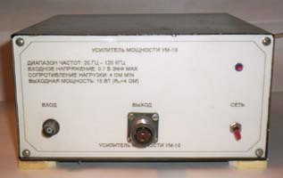 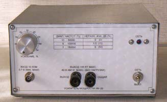 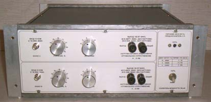
Усилители мощности низкой частоты (УНЧ) в разных вариантах были разработаны для повышения нагрузочной способности генератора сигналов низкочастотного Г3-118 и использовались при проведении опытов с магнитострикционными преобразователями различных типов, динамическими головками, низкочастотными и высокочастотными излучателями звука, соленоидами, трансформаторами и т. п. Помимо генератора Г3-118 совместно с усилителями могут использоваться и другие источники сигнала с подходящими параметрами.
1. Низкочастотный усилитель мощности 15 Вт
Параметры усилителя:
Схема электрическая принципиальная усилителя мощности 15 Вт
Электрическая принципиальная схема усилителя мощности показана на рис. 1.
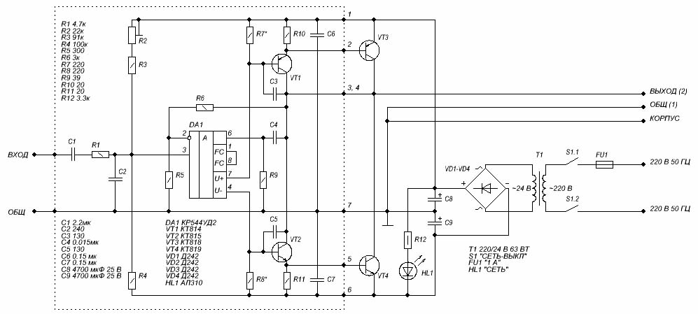
Рис. 1. Схема электрическая принципиальная низкочастотного усилителя мощности 15 Вт.
За основу усилителя взята схема простого высококачественного усилителя мощности звуковой частоты [2] с некоторыми корректировками. Операционный усилитель (ОУ) DA1 (КР544УД2) работает в малосигнальном режиме с малоомной нагрузкой R9. ОУ питается через резисторы R7, R8. Ток питания, зависящий от входного сигнала, создает на этих резисторах напряжение смещения транзисторов VT1, VT3 и VT2, VT4, включенных по схеме Дарлингтона. С выхода усилителя (коллекторы VT3, VT4) сигнал отрицательной обратной связи через резисторы R5, R6 поступает на инвертирующий вход ОУ. Соотношение сопротивлений R5 и R6 определяет уровень входного сигнала при максимальной мощности (0.7 В эфф.). Для балансировки ОУ по постоянному напряжению служит цепь R2R3R4. Конденсатор C2 служит фильтром нижних частот, а цепочка C4R9 - фильтром верхних частот. Для питания усилителя используется трансформатор T1 с выходным напряжением 24 В (действующее значение), ко вторичной обмотке которого подключен диодный мост VD1 - VD4 (4 шт. Д242). Конденсаторы C8, C9 фильтра блока питания создают искусственную среднюю точку, используемую в качестве общего провода. Для индикации работы усилителя используется светодиод HL1 "СЕТЬ". Ниже на фотографиях рис. 2 - 4 показан вид усилителя спереди, сзади и со снятой верхней крышкой.
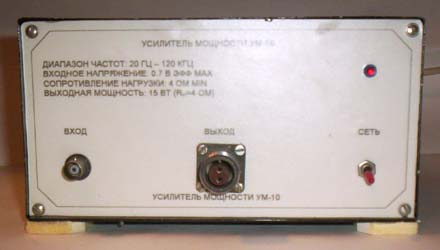
Рис. 2. Низкочастотный усилитель мощности 15 Вт. Вид спереди.
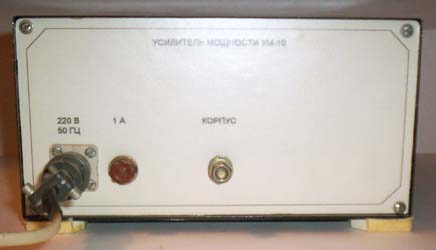
Рис. 3. Низкочастотный усилитель мощности 15 Вт. Вид сзади.
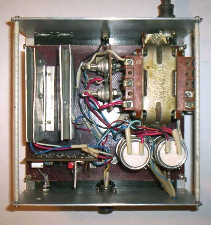
Рис. 4. Низкочастотный усилитель мощности 15 Вт. Вид сверху со снятой верхней крышкой.
2. Низкочастотный усилитель мощности 100 Вт
Параметры усилителя:
Схемы электрические принципиальные усилителя мощности 100 Вт
Электрические принципиальные схемы усилителя мощности показаны на рис. 5, 6.
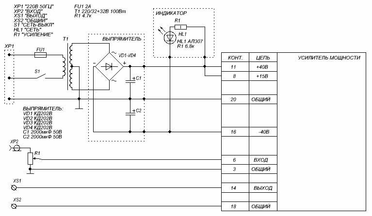
Рис. 5. Схема электрическая принципиальная низкочастотного усилителя мощности 100 Вт.
Для питания усилителя от сети переменного тока 220 В 50 Гц используется силовой понижающий трансформатор T1 с выходным напряжением 2 х 32 В (действующее значение), ко вторичной обмотке которого подключен диодный мост VD1 - VD4 (4 шт. КД202В). Конденсаторы C1, C2, включенные на выходе диодного моста, выполняют роль фильтра блока питания. Для индикации работы усилителя используется светодиод HL1 "СЕТЬ" (эскиз печатной платы приведен на рис. 7). С помощью потенциометра R1 "УСИЛЕНИЕ" можно линейно изменять уровень входного сигнала от 0 до 100 %.
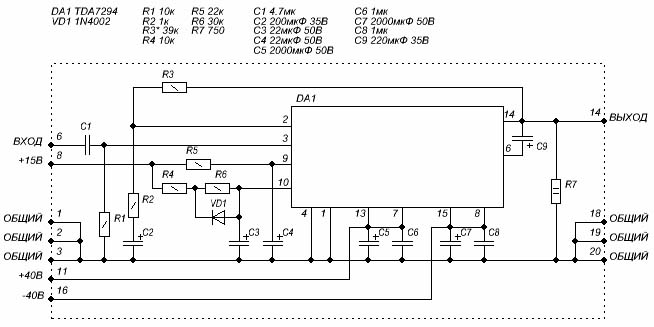
Рис. 6. Схема электрическая принципиальная платы низкочастотного усилителя мощности 100 Вт.
Сам усилитель мощности построен по типовой схеме на микросхеме УНЧ TDA7294 (рис. 6). Чтобы расширить частотный диапазон в сторону более низких частот, использованы конденсаторы с емкостью больше рекомендованной (C1, C2, C9). Эскиз печатной платы усилителя мощности представлен на рис. 8.
Рис. 7. Эскиз печатной платы индикатора усилителя мощности 100 Вт (размер платы 30 х 30 мм2).
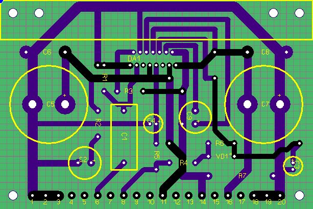
Рис. 8. Эскиз печатной платы низкочастотного усилителя мощности 100 Вт (размер платы 120 х 80 мм2).
Ниже на фотографиях рис. 9 - 11 показан вид усилителя спереди, сзади и со снятой верхней крышкой:
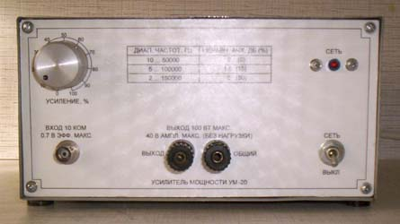
Рис. 9. Низкочастотный усилитель мощности 100 Вт. Вид спереди.
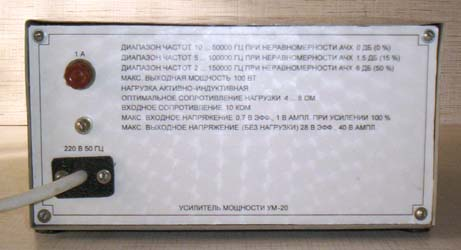
Рис. 10. Низкочастотный усилитель мощности 100 Вт. Вид сзади.
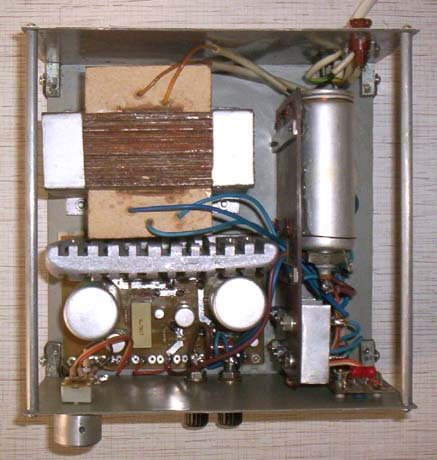
Рис. 11. Низкочастотный усилитель мощности 100 Вт. Вид сверху со снятой верхней крышкой.
3. Низкочастотный двухканальный усилитель мощности 2 х 100 Вт
Параметры усилителя:
Схемы электрические принципиальные усилителя мощности 2 х 100 Вт
Электрические принципиальные схемы усилителя мощности показаны на рис. 12 - 14.
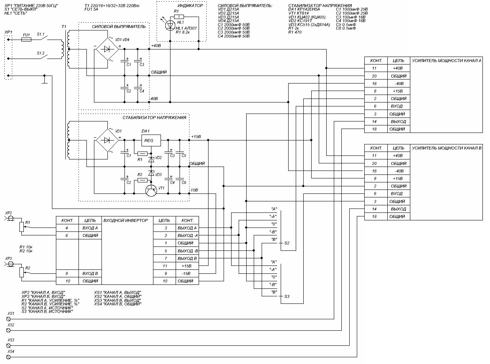
Рис. 12. Схема электрическая принципиальная двухканального низкочастотного усилителя мощности 2 х 100 Вт.
Напряжение питающей сети 220 В 50 Гц с разъема XP1 через предохранитель FU1 и выключатель S1 поступает на первичную обмотку понижающего трансформатора T1. Его вторичная обмотка с выходным напряжением 2 х 32 В (действующее значение) используется для питания силовой части усилителя (через силовой выпрямитель), а обмотка с выходным напряжением 2 х 16 В - для питания сигнальных цепей (через стабилизатор напряжения). Напряжение с обмотки 2 х 32 В поступает на диодный мост VD1 - VD4 (4 шт. Д215А) силового выпрямителя. Конденсаторы C1 - C4, включенные на выходе диодного моста силового выпрямителя, выполняют роль фильтра блока питания. Для индикации работы усилителя используется светодиод HL1 "СЕТЬ" (эскиз печатной платы на рис. 15). Двухполярный стабилизатор напряжения +15 В собран по схеме линейного параметрического стабилизатора на микросхеме DA1 (КР142ЕН5) и транзисторе VT1 (КТ814). Он служит для питания сигнальных цепей усилителя, в частности, входного инвертора, а также вентилятора принудительного охлаждения радиаторов усилителей мощности. Эскиз печатной платы стабилизатора напряжения показан на рис. 16. С помощью потенциометров R1 "КАНАЛ A. УСИЛЕНИЕ, %" и R2 "КАНАЛ B. УСИЛЕНИЕ, %" можно линейно изменять уровень входного сигнала с каждого из канальных входов от 0 до 100 % независимо друг от друга. С потенциометров R1, R2 сигнал поступает на входной инвертор, позволяющий получать неинвертированное и инвертированное напряжение с каждого из канальных входов с примерно одинаковой амплитудой. Переключатели S2 "КАНАЛ A. ИСТОЧНИК" и S3 "КАНАЛ B. ИСТОЧНИК" позволяют выбрать для каждого из каналов входной источник сигнала и его полярность. Далее сигналы выбранных источников поступают на соответствующие усилители мощности канала A и B. С выходов усилителей мощности усиленный сигнал поступает на выходные клеммы усилителя. Выходные клеммы усилителя при необходимости могут быть соединены параллельно для повышения тока в нагрузке (переключатели S2 и S3 должны находиться в одинаковых положениях) или использоваться в последовательном соединении для повышения напряжения на нагрузке (переключатели S2 и S3 должны находиться в положении источника сигнала с одного и того же входа, но в разной полярности, например, A и -A или B и -B).
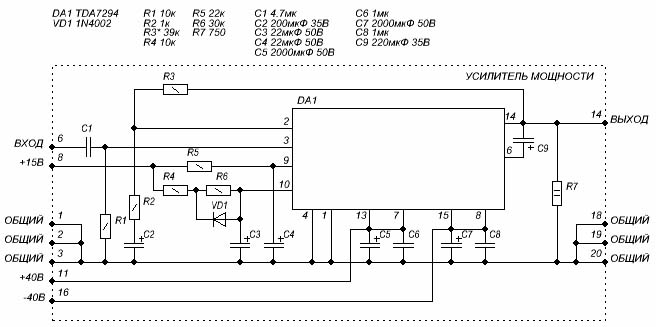
Рис. 13. Схема электрическая принципиальная платы усилителя мощности одного канала низкочастотного усилителя мощности 2 х 100 Вт.
Усилители мощности обоих каналов построены по типовой схеме на микросхеме УНЧ TDA7294 (рис. 13). Чтобы расширить частотный диапазон в сторону более низких частот, использованы конденсаторы с емкостью больше рекомендованной (C1, C2, C9). Эскиз печатной платы усилителя мощности каждого из каналов представлен на рис. 17. Для принудительного охлаждения плат усилителей мощности используется вентилятор, установленный в корпусе усилителя и подключенный к стабилизатору напряжения.
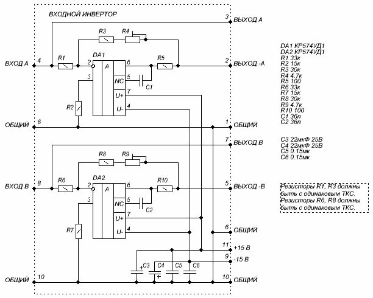
Рис. 14. Схема электрическая принципиальная платы входного инвертора низкочастотного усилителя мощности 2 х 100 Вт.
Двухканальный входной инвертор (рис. 14) построен по схеме инвертирующего усилителя с коэффициентом усиления, равным 1, на быстродействующих операционных усилителях DA1DA2 (КР574УД1). Точное значение коэффициента усиления подбирается с помощью подстроечных резисторов R4 или R9 независимо для каждого канала инвертора. Эскиз печатной платы входного инвертора представлен на рис. 18.
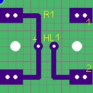
Рис. 15. Эскиз печатной платы индикатора усилителя мощности 2 х 100 Вт (размер платы 30 х 30 мм2).
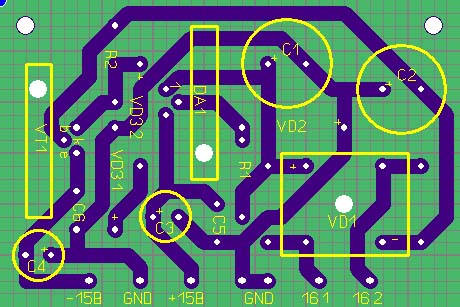
Рис. 16. Эскиз печатной платы стабилизатора напряжения +15 В усилителя мощности 2 х 100 Вт (размер платы 90 х 60 мм2).
Рис. 17. Эскиз печатной платы одного канала низкочастотного усилителя мощности 2 х 100 Вт (размер платы 120 х 80 мм2).
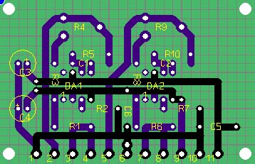
Рис. 18. Эскиз печатной платы входного инвертора низкочастотного усилителя мощности 2 х 100 Вт (размер платы 70 х 45 мм2).
Ниже на фотографиях рис. 19 - 21 показан вид усилителя спереди, сзади и со снятой верхней крышкой:
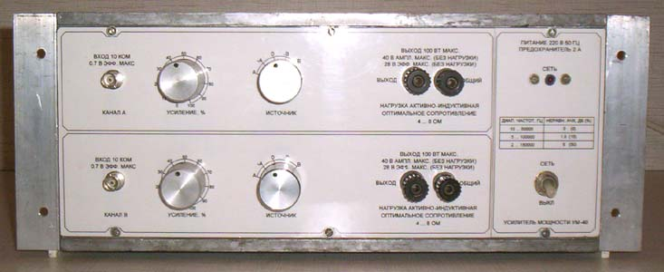
Рис. 19. Низкочастотный двухканальный усилитель мощности 2 х 100 Вт. Вид спереди.
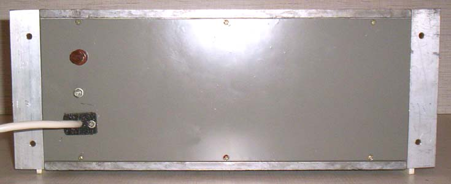
Рис. 20. Низкочастотный двухканальный усилитель мощности 2 х 100 Вт. Вид сзади.
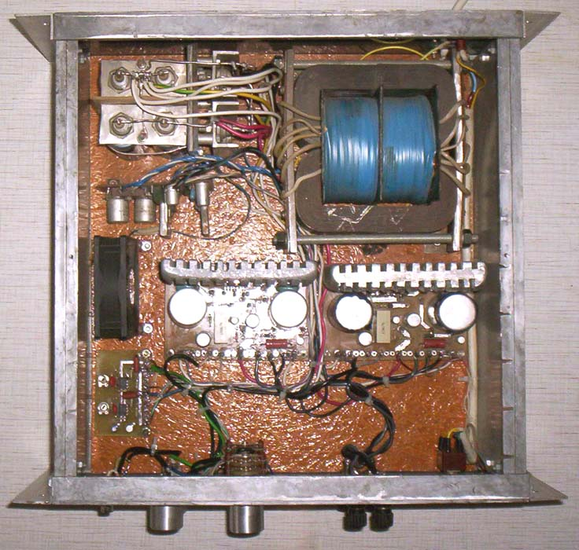
Рис. 21. Низкочастотный двухканальный усилитель мощности 2 х 100 Вт. Вид сверху со снятой верхней крышкой.
4. Состояние разработки
Усилители мощности изготовлены в одном экземпляре каждый и используются в лабораторных условиях для проведения различных экспериментов. В частности, с помощью усилителя в комплекте с генератором сигнала и осциллографом можно оценивать свойства различных магнитомягких материалов в широком диапазоне частот. Одна из измерительных схем показана на рис. 22.
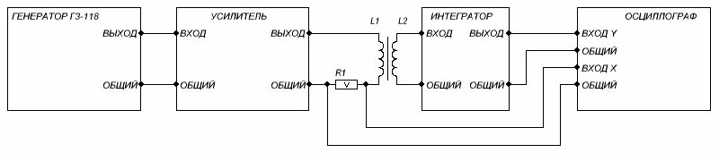
Рис. 22. Измерительная схема для снятия петель гистерезиса магнитных материалов.
На испытуемый образец наматываются две обмотки. L1 - обмотка возбуждения, с ее помощью внутри образца создается переменное магнитное поле. Обмотка L2 - сигнальная. Напряжение с ее выхода, прямо пропорциональное скорости изменения магнитной индукции внутри образца, подается на интегратор, а с него - на вход Y осциллографа. Резистор R1 выполняет роль датчика тока. Напряжение с него, прямо пропорциональное напряженности магнитного поля внутри образца, подается на вход X осциллографа. Роль интегратора в самом простом исполнении может выполнять RC цепь, включенная по схеме фильтра нижних частот (ФНЧ). Выбор частоты среза ФНЧ определяется частотой измерений.
На рис. 23 показан пример петли гистерезиса для ферритового кольца марки М1500НМ3-Б типоразмера К20х10х5, снятой на частоте 500 Гц для определения коэрцитивной силы. Одно большое деление по горизонтали составляет примерно 27 А/м. Коэрцитивная сила по индукции равна примерно 11 А/м, что соответствует литературным данным [3, 4].
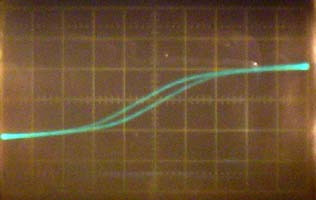
Рис. 23. Петля гистерезиса ферритового кольца марки М1500НМ3-Б типоразмера К20х10х5 на частоте 500 Гц.
С использованием УНЧ 100 Вт проводились эксперименты по изучению воздействия на различные биообъекты и биоматериалы магнитного поля катушек Гельмгольца [5], промодулированного музыкальными, шумовыми и кодированными сигналами, которые подавались на вход усилителя с выхода звуковой карты компьютера. Схема эксперимента представлена на рис. 24. Усилитель мощности подключается к стереовыходу звуковой карты компьютера через резисторную цепь R1R2, выполняющую роль сумматора сигналов левого и правого звукового канала, а катушки Гельмгольца - к выходу усилителя. Для звуковой индикации переменного магнитного поля в зоне объекта может использоваться специальный аудиоконтроллер [1].
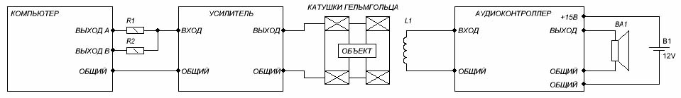
Рис. 24. Схема эксперимента по изучению воздействия магнитного поля на биообъекты и биоматериалы.
Ссылки:
23.09.2003
17.06.2010
26.04.2013
13.11.2013
Альтернативные источники
энергии
Компьютеры и
Интернет
Магнитные поля
Механотронные системы
Перспективные
разработки
Электроника и технология